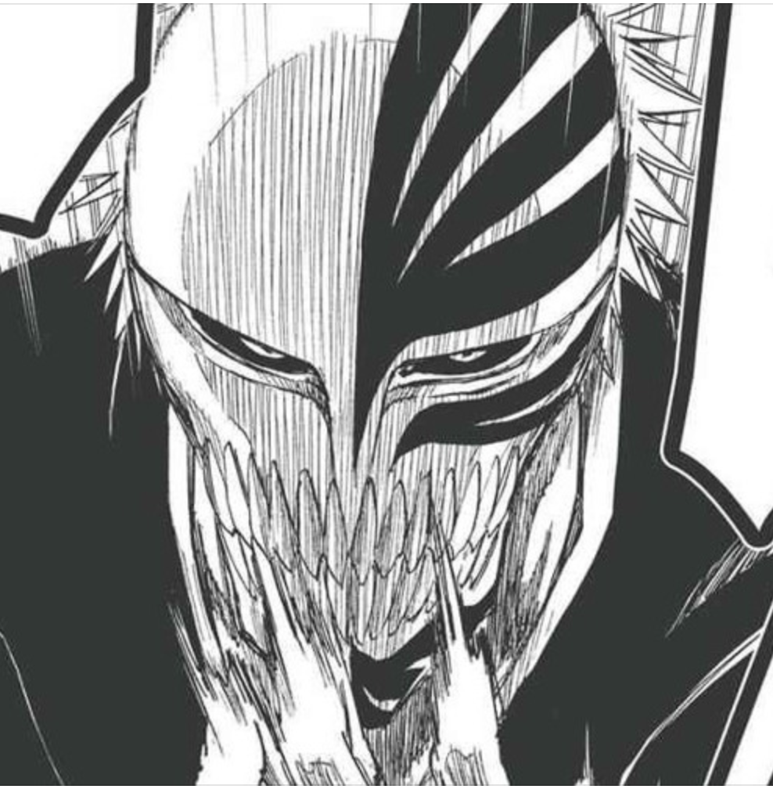
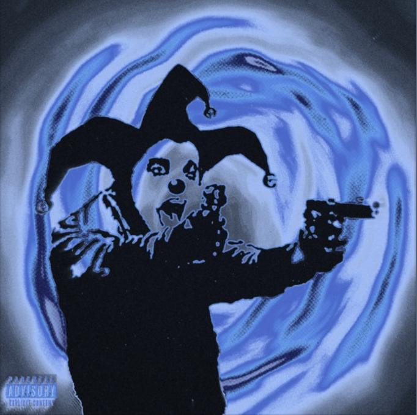
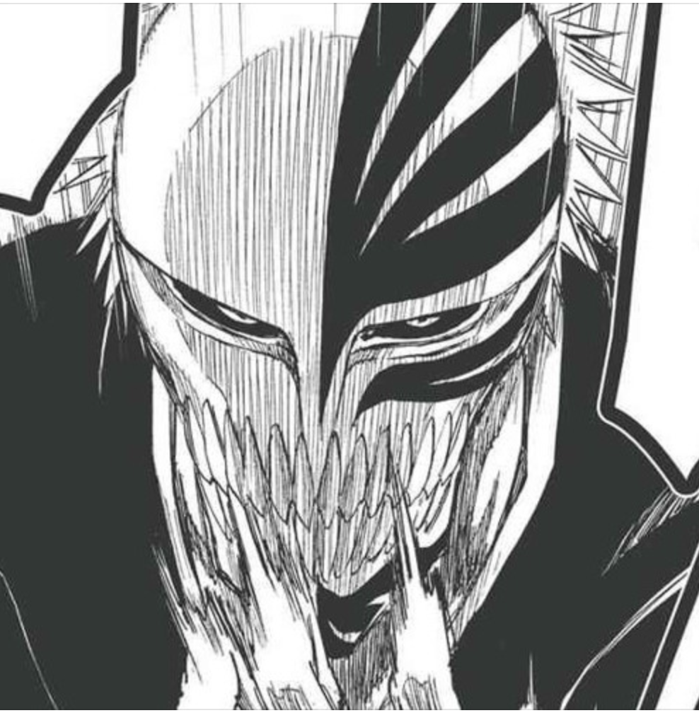
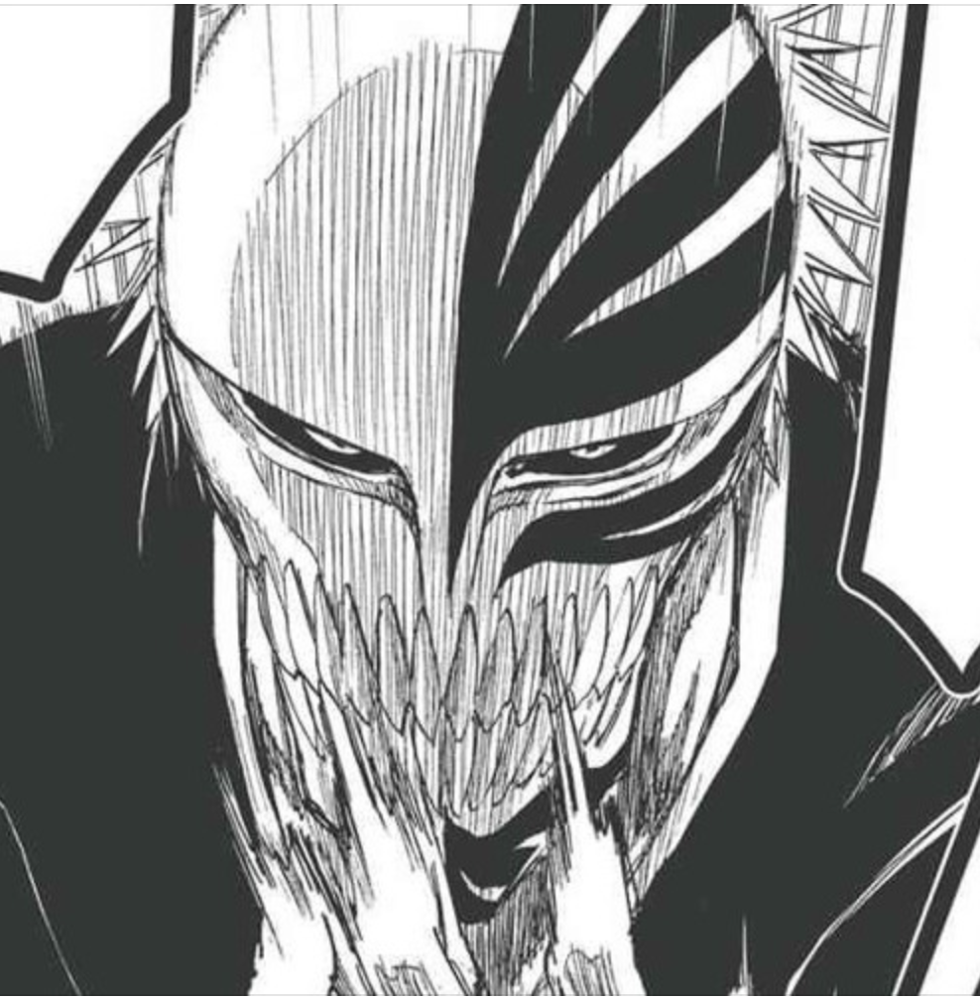
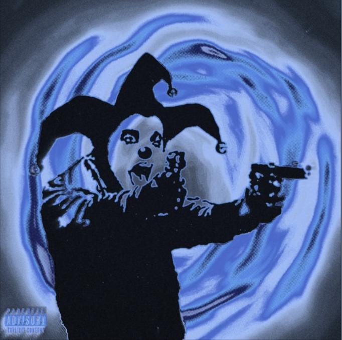
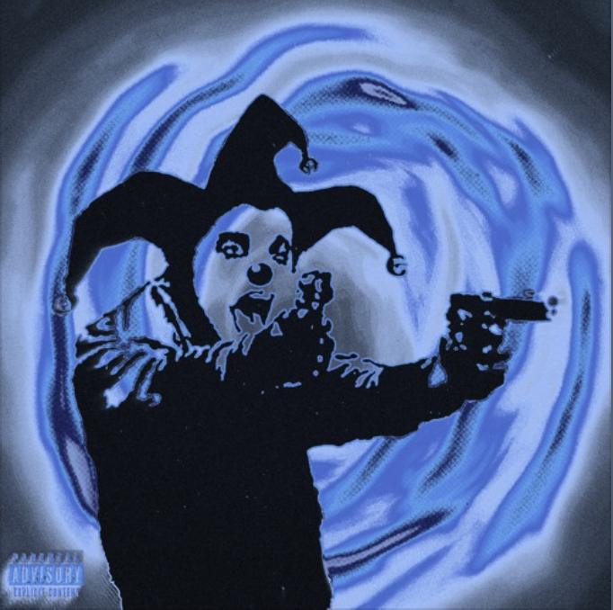

“I'm not going to kill you. I want you to do me a favor. I want you to tell all your friends about me.” what can i do Batman allows humanity itself to become extraordinary. His 'powers' are something that is completely within the realm of possibility - physical discipline, mixed martial arts, swordsmanship, and intellect are just a few of the skills he uses to combat his enemies.



 

 
